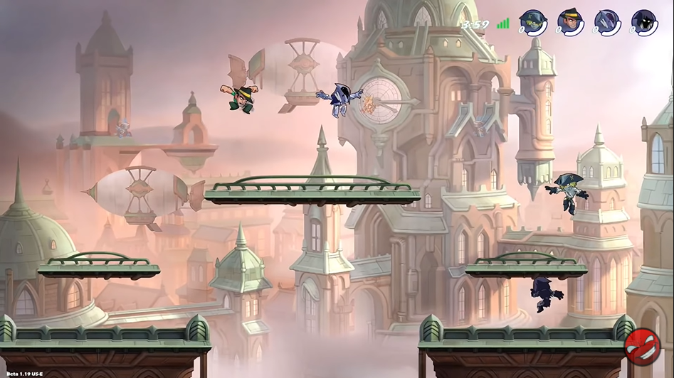

The Legends of Frawlsalla are the playable personas in the game. Each Legend has their own weapon combination, signature moves, and base stats, all of which are unique to that Legend.
By default, 9 random Legends are playable each week, determined by the weekly Legend Rotation. To permanently keep a Legend, the Legend must be purchased. Players can buy legends from Storesalla. Once purchased, that legend become available to the player forever. The newest Legends will cost Coin Gold.png 7,200 for 2 weeks before having their price reduced. Legends typically cost Coin Gold.png 5,400, but will seldomly experience price reductions are based primarily on their Legend and Weapon release dates. Alternatively, players can also buy the All-Legends Pack DLC with real money to obtain all current and future Legends. All Legends are unlocked in Training mode.
Maps
Maps (previously called Realms) refer to the myriad stages and locations where the battles of Frawlsalla are fought. These can vary from prehistoric temples of bone and stone to floating platforms above a steam-driven Victorian city. Some correspond to certain characters and themes, others do not.
Maps can come in three sizes: small, standard, and big. Each map has a standard sized variant, while only certain maps have small, big, or both variants. Typically, smaller maps are intended for 1v1 and larger maps are intended for free-for-all matches, however this is different per map.
In Custom Online lobbies, players can vote for what map they want to play. Maps are selected randomly in Casual Matchmaking and Ranked, but the player has the option to ban a single map from play.
Store
The Store, or Mallhalla, is where Items can be purchased including Skins, Weapon Skins, Emotes, Legends, Colors, and more.
Purchases can be made from the Store using Mammoth Coins or Gold Coin. The following types of items can be purchased with either Coin Gold.png Gold or Coin Mammoth.png Mammoth Coins: Legends and Seasonal Colors
The only section of the store where this is different is the Ranked section, where special Colors, Weapon Skins, Emotes and UI Themes can be purchased with Coin Glory.
Every week, a new set of discounted items will appear in the Store. Usually this will affect 2 Skins, 2 Weapon Skins, 1 Emote and 1 Sidekick per week. The set of discounted items will be the same for all players, meaning it is possible to already own an item that goes on discount.

Gameplay
Attacks are one of the core components in Frawlsalla. Each player must attack in order to KO their opponents and ensure their victory. Frawlsalla's damage system doesn't use health or hit points. Legends instead have a damage meter which shows how much total damage they have taken. As the damage taken by a Legend increases, the Legend is knocked further by each attack, making them easier to KO as the game goes on. Often, players on high damage (red to black; see below) are killed quickly by a single powerful attack. A player therefore has two challenges: firstly to put their opponent into high damage, and secondly to secure the critical KO afterwards.
The damage an attack deals is the same for every Legend, and is only modified by a Legends Stats - namely, a Legend's Strength and Defense stats. Two Legends with the same Strength will deal the same damage with the same attack to the same opponent. A Legend's Signatures are unique, and have individually assigned damage and force values - these attacks are not affected by stats. The damage made by a legend with the same attack stat as his opponent defense is the weapon's base damage value.
About Frawlsalla
Frawlsalla is a 2D platform fighter and100% Free to Play on PS5, PS4, Xbox Series X, Xbox One, PC, Nintendo Switch and Mobile devices.
History’s greatest warriors brawl to prove who’s the best in an epic test of strength and skill. These slugfests are salted with powerful weapons and gadgets. Every weapon you pick up changes your style of play.
In Frawlsalla, we can play online ranked 1v1 and also online ranked 2v2. On online ranked 1v1, we can climb the ranked ladder from Tin up to Platinum and beyond!. On online ranked 2v2, we can Climb the ranked ladder with a friend! Matches you and a partner against teams near you skill level. Your friend can be online or right next to you.
Not only that, we can custom game room. We can add our friend to play together. And the last, we can play offline to improve our skill.